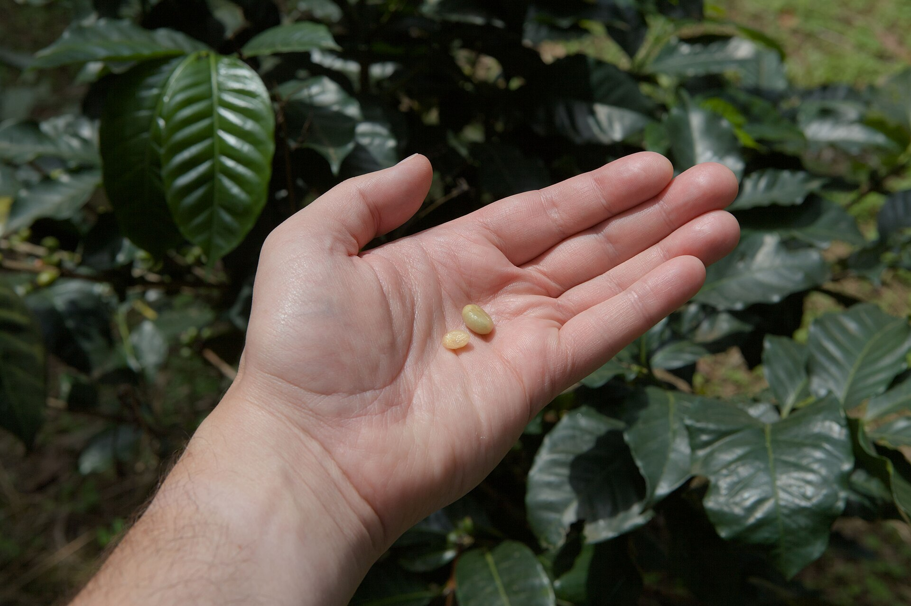
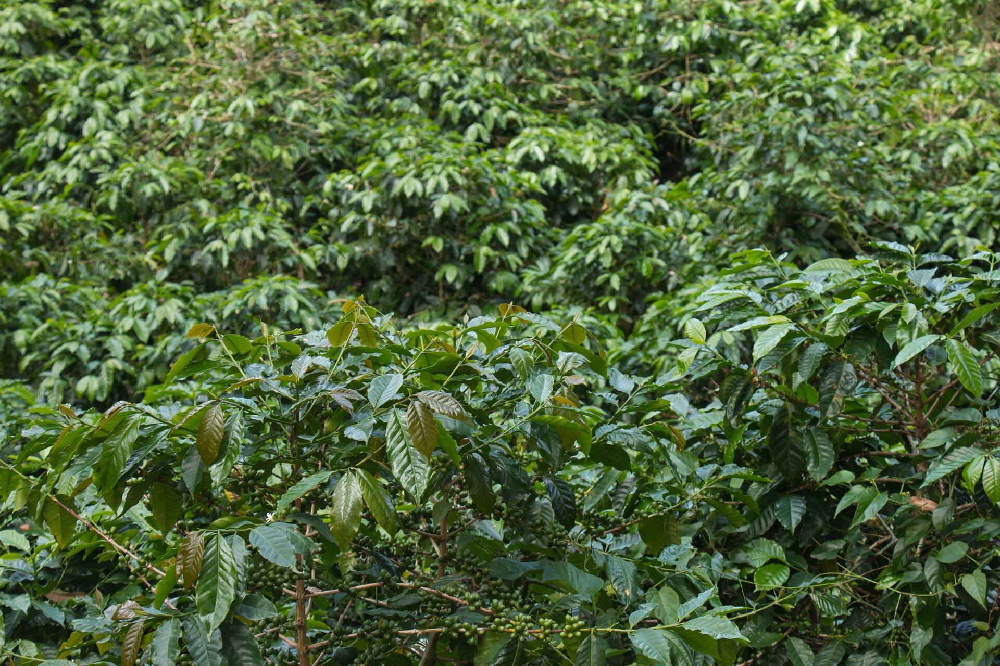
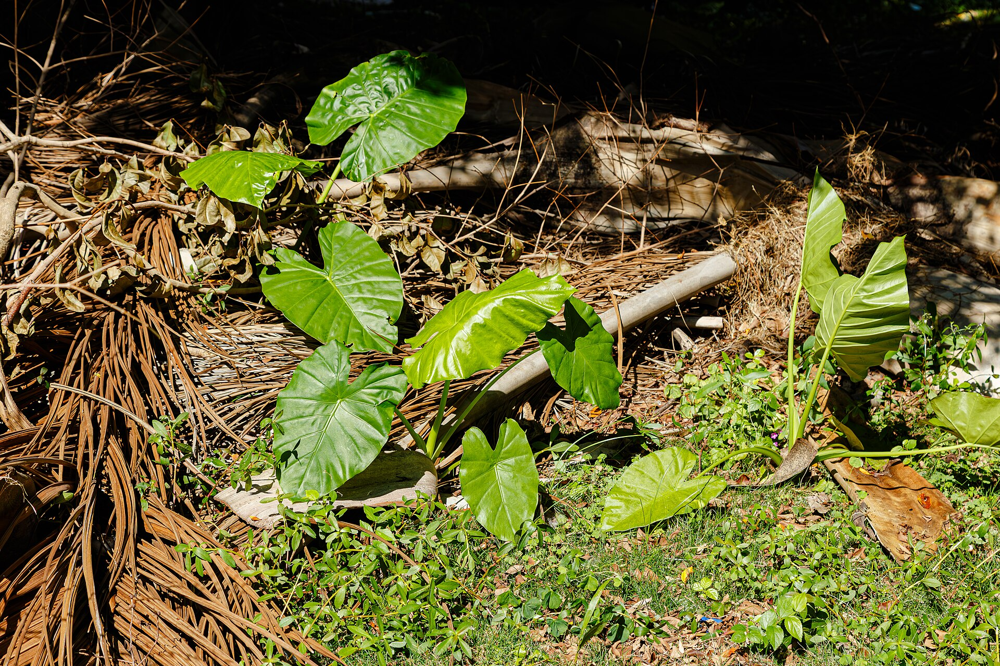
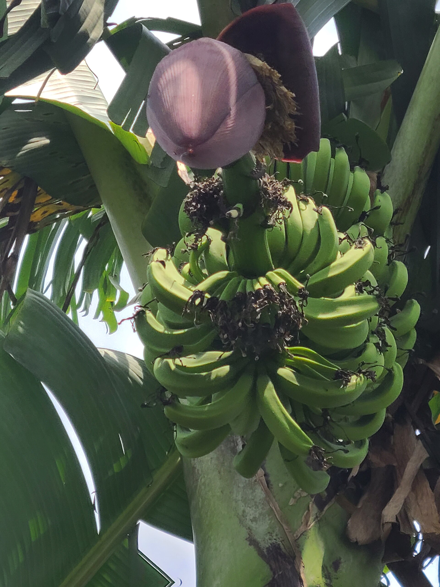
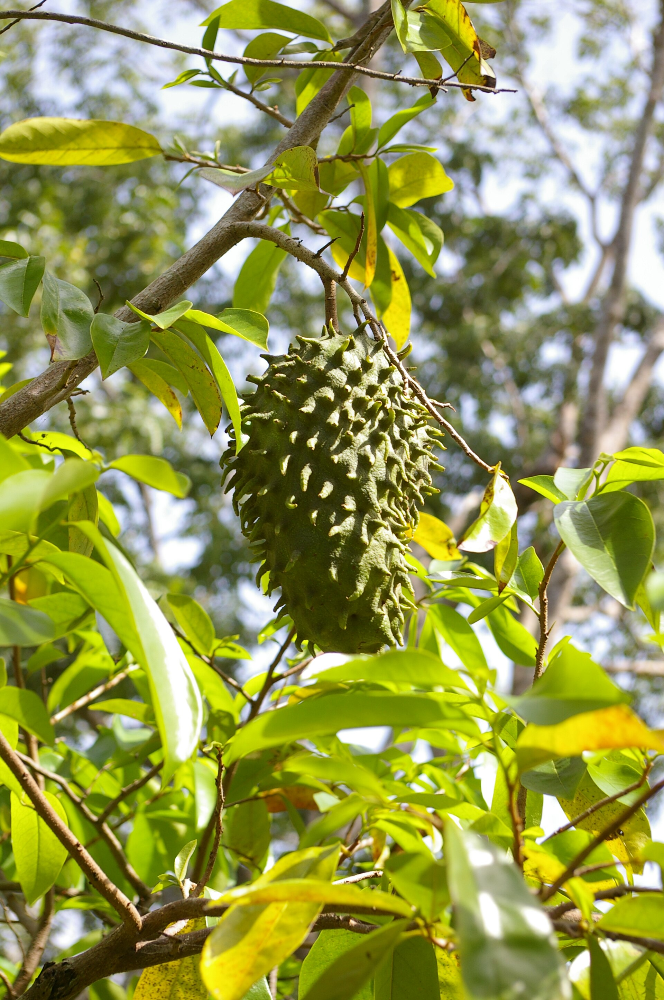
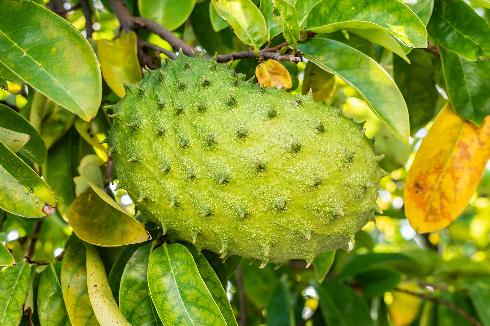

La finca
Esto no es un parque para turistas: es una finca que trabaja. Sembramos café, tubérculos, plátano y guanábana, y cuidamos el bosque y el agua que lo hacen posible.

Abierto los fines de semana. Grupos, escuelas y familias entre semana, con reserva.
Lo que crece aquí
-
Café
Matas bajo sombra de árboles nativos. Se cosecha grano por grano, solo el maduro, y se seca al sol en la misma finca.

-
Tubérculos
Ñame, otoe y yuca, la base de la mesa del campo. Te enseñamos a reconocer cada mata y cuándo está lista para sacar.

-
Plátano
Racimos que se cortan verdes para el patacón y maduros para el plátano en tentación. Todo el año.

-
Guanábana
La fruta de la casa. En chicha, en batido o recién abierta en el árbol, cuando es temporada.

Cómo es un día en la finca
Camina. El sendero pasa por el cafetal y sube al bosque que protege la quebrada.
Cosecha. Corta tu racimo, saca tu ñame y llévatelo a casa.

Prueba. Guanábana, café colado y comida hecha con lo que se sembró aquí.
Cuida. No quemamos, guardamos el bosque junto al agua y devolvemos al suelo lo que la cosecha le quita.
La finca en fotos
8 fotos · desliza
Antes de venir
- A una hora de la ciudad más cercana, por carretera asfaltada
- Sábados y domingos, 8:00 a. m. a 3:00 p. m.
- Estacionamiento dentro de la finca
¿Hay que reservar?
Sí, al menos un día antes, para tener listo el recorrido y la comida. Entre semana solo abrimos con reserva.
¿Qué llevo puesto?
Zapatos cerrados o botas, ropa cómoda, gorra y repelente. Si llueve, el sendero se pone resbaloso.
¿Pueden ir niños?
Claro. A los niños les encanta cosechar. Los menores de 5 años no pagan.
¿Reciben grupos y escuelas?
Sí. Armamos giras educativas sobre cultivos y conservación para grupos de hasta 60 personas.
¿Cómo se paga?
En efectivo o por Yappy el día de la visita. Para grupos pedimos un adelanto.
Cómo llegar
Dirección de la finca
Corregimiento, provincia
- Sábado
- 8:00 – 15:00
- Domingo
- 8:00 – 15:00
- Lunes a viernes
- Con reserva